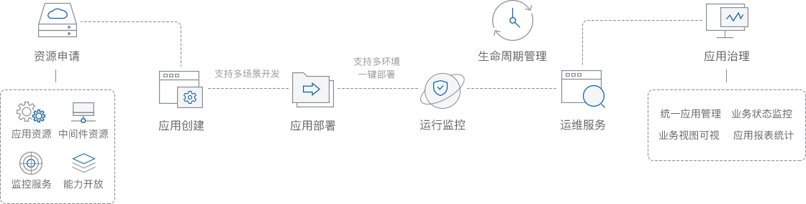

平台优势
行业级解决方案,助力企业技术转型,轻松上云
集成PHP/WINDOWS/JAVA/.NET等基础运行环境,提供开发工具,实现快速,简易开发
提供微服务框架,多种公共能力,帮助企业真正实现微服务架构
应用部署简单,支持多环境部署,操作便捷,稳定可靠
云上开发
云上应用开发解决方案整体流程图
基于容器,springcloud等主流技术实施端到端的应用开发,实现企业应用高速开发,快速部署,稳定运行的应用场景,提供持续集成,弹性伸缩,应用服务等功能特性,使企业专注于业务逻辑开发,缩短业务上线周期,优化资源分配,提高整个项目的运维管理能力
开发场景
支持多种开发场景、在云中创建,迁移,优化应用
微服务治理平台是面向企业及开发者的一站式DevOps平台服务,支持基于微服务的应用开发、治理、部署及运维监控的全生命周期管理,结合容器集群和中间件服务的平台能力,能够帮助用户快速构建云分布式应用
移动应用解决方案提供一个高效的、省心的标准化App开发定制解决方案,使用标准Web技术开发iOS、Android原生App,各类功能一站聚合、一键接入涵盖App推送、云修复、版本更新、大数据统计分析等全面运维功能
开发环境
支持开发、测试、预发、生产等多环境一键部署,让开发者更专注于业务本身
应用 CI/CD 是 DevOps 的一种典型应用场景,但传统 DevOps 体系中,开发测试和生产环境往往是异构的,同时服务部署方式也缺乏标准化的流程,这些成为实现高效的应用持续集成/持续交付平台的巨大鸿沟。而基于 Docker 及 Kubernetes 构建的 容器编排与调度平台,则可统一应用的部署环境,提供标准化的部署发布流程

开发服务
提供一站式开发服务,支持研发全生命周期,解决开发者痛点